Blog
Automatic topic classification of research papers using the NLP topic model NMF
Blog post
To keep up with innovations in research fields, literature review is often performed. The analysis and coding of papers done during literature reviews can be quite tasking, especially when the number of papers to be evaluated is large. A possible alternative to help reduce the effort required is to use NLP topic modelling techniques. Topic modelling involves extracting the most representative topics occurring in a collection of documents and grouping the documents under a topic; similar to the process done manually by researchers when conducting literature reviews.
There are several topic modelling techniques, such as LDA, LSA, and NMF. I had previously conducted an experiment to find out the topic model with the best performance, it turned out to be NMF. In this blog post i am going to show how i use NMF to automatically classify research papers under their respective topics. The full code can be found here. You can read more about NMF here . I followed the following steps outlined below:
1. Import Libraries
First thing i did was to import all the necessary libraries which will be used in this project. Most of the libraries were from 'nltk'.
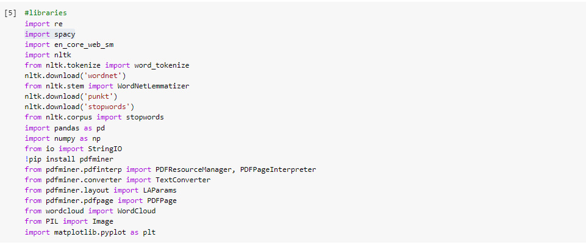2. Load the data
The selected research papers data had been entered into an excel file 'research_papers.csv', with columns for 'ID', 'Author', 'Title', 'Year', 'Conference/Journal', 'Introduction', 'Conclusion'. I loaded the excel file into a dataframe called 'dataset'.
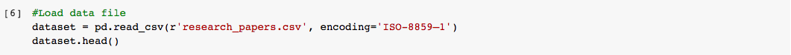3. Clean Data
Before proceeding, i had to clean up the data. I dropped the unnecessary columns like 'ID', 'Author','Year', 'Conference/Journal'. For papers with no conclusions, I filled the empty cell with the text "No conclusion". Next, I merged the two columns 'Abstract' and 'Conclusion' to form a new column called 'PaperText'. The text in this new column is what i would be working on in this experiment.

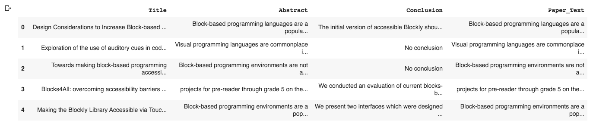
4. Preprocess Data
Another important step was to preprocess the data. First, i tokenized each sentence into a list of words, then i removed punctuations, stopwords and words of length less than 3. Lastly, i lemmatized each token.
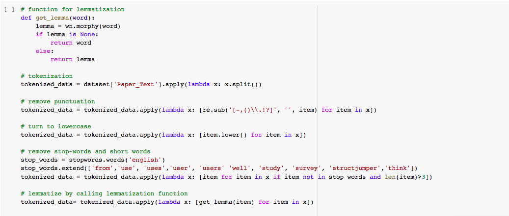5. Create Bigrams and Trigrams
Additionally, as there were some words that frequently occurred together, i decided to use them to to create bigrams and trigrams. Bigrams and Trigrams are two or three words frequently occurring together in a document. Some examples in my corpus include: ‘visually impaired’, ‘programming language’, ‘block based programming’, 'screen reader', 'computer science' etc.
I used Gensim’s Phrases model to build and implement the bigrams and trigrams. The two important arguments to Phrases are min_count and threshold. The higher the values of these param, the harder it is for words to be combined to bigrams. After creating the bigrams and trigrams, i combined the tokens back into sentences and assigned the de-tokenized text to a new column in my dataframe called 'clean_text'.
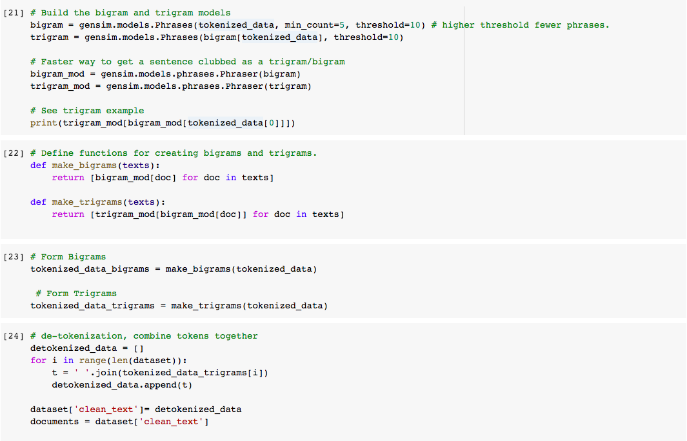6. Perform Exploratory Analysis
To verify whether the preprocessing happened correctly, we’ll make a word cloud using the WordCloud package. This will give a visual representation of most common words. It is key to understanding the data and ensuring we are on the right track, and if any more preprocessing is necessary before applying the topic model.
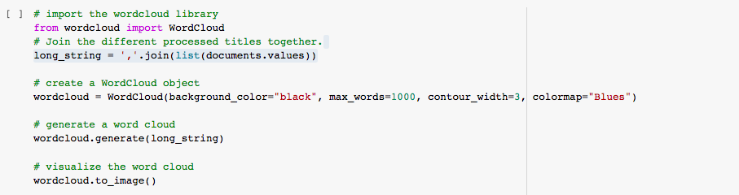We can see that the most common words are the words, code, blind, tool, design, programming, accessibility, visual etc.
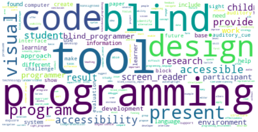7. Create Document-Term Matrix
This is the first step towards topic modeling. Each and every term and document in the corpus needs to be represented as a vector. We will use sklearn's TfidfVectorizer to create a document-term matrix using only 1000 terms (words) from our corpus. I could have used all the terms in my corpus to create this matrix but that would require a lot of computation.
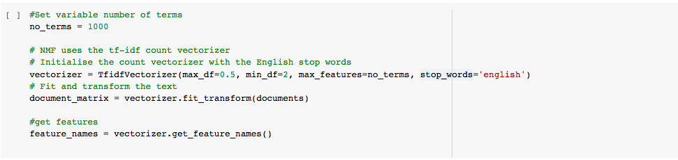8. Generate topics using Topic Model
The generated document-term matrix will be decomposed into multiple matrices. We will use sklearn's decomposition model NMF to perform the task of matrix decomposition. The number of topics to be generated can be specified by using the n_components parameter. The resulting matrices derived after running the topic model are the document-topic matrix and term-topic matrix. In the term-topic matrix, sorting the rows in reverse, reveals the top terms for each topic.
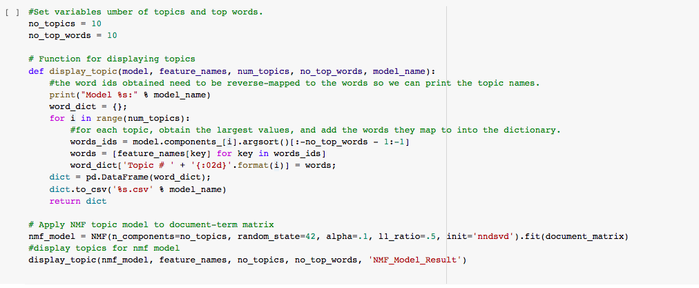I display the 10 topics and their top 10 terms. From the top 10 terms, you can infer what a topic is about, for example looking at 'Topic #05', we can tell it is about the 'challenges blind developers face in software development environments'. Each paper in the corpus falls under one of these topics. We will use the generated topics to classify every paper in the dataset later.
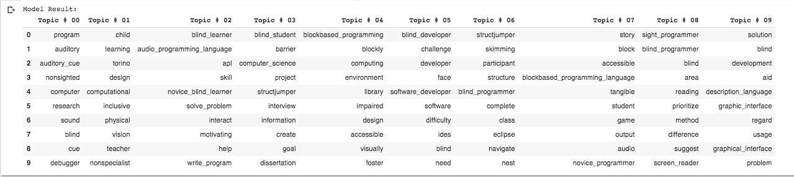9. Analyzing our NMF model
To analyze the model, we visualize the topics for interpretability. To do so, we’ll use a popular visualization package, pyLDAvis which generates an inter-topic distance map. This map is designed to help in the understanding and interpreting of individual topics, and understanding the relationships between the topics.
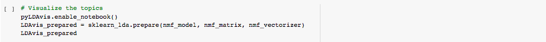The graph below is the generated Inter-topic Distance Plot. The closer the distance between topics and the more the overlap between topics the worse the performance of the model. Looking at the plot below we can see that for the most part NMF produced topics that had good distance and few overlaps, this means that NMF produces distinctive topics.
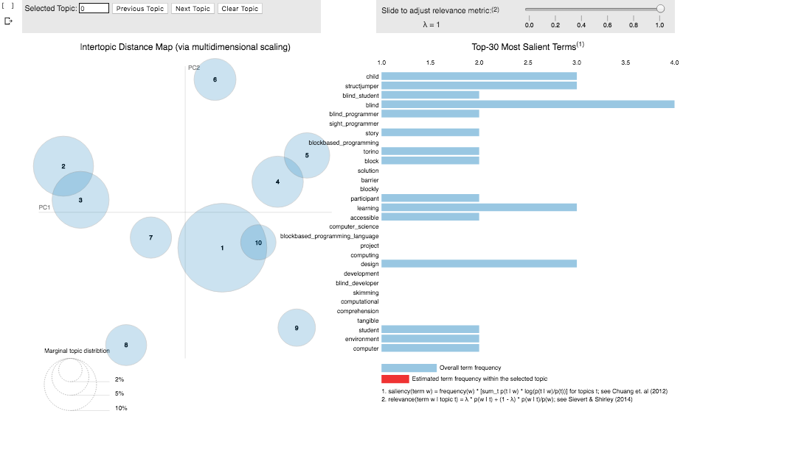10. Classify papers under topics
Lastly, i use the 10 topics generated by the NMF model to categorize each paper in my dataset.
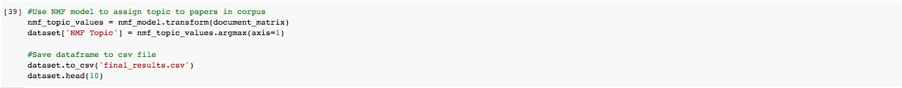I show the topic classification of the first 10 papers in my corpus below. As we can see the first paper was categorized under 'Topic 4'. From the title and text of the paper we can see that the paper is about block-based programming, looking at the previous table showing each of the 10 topics we can see that 'Topic 4' is about designing a block-based programming environment. This means that the paper was rightly classified by the NMF model. The same can be seen in the classification of other papers in the dataset.
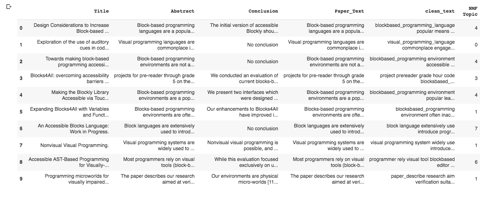